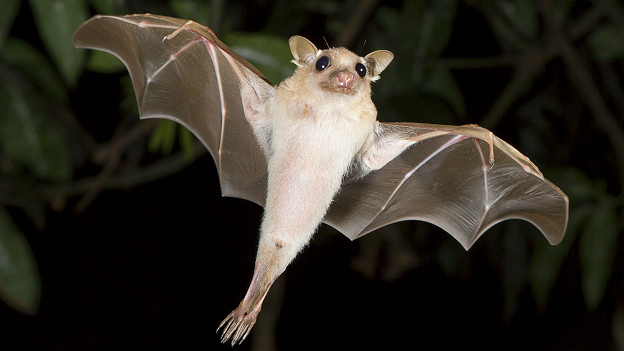

El Murciélago es un mamífero volador que pertenece al orden de los Chiroptera. Vive en muchos tipos de lugares, como cuevas, bosques, selvas, árboles e incluso edificios. Son animales principalmente nocturnos, lo que significa que salen de noche para buscar alimento y descansar durante el día. Dependiendo de la especie, se pueden alimentar de insectos, frutas, néctar o pequeños animales. Muchos murciélagos utilizan un sistema llamado Ecolocalización, que consiste en emitir sonidos y escuchar el eco para orientarse y encontrar comida en la oscuridad. Además, cumplen un papel muy importante en la naturaleza porque controlan plagas de insectos y ayudan a polinizar plantas y dispersar semillas.
Algunas características de los elefantes son:
- Son los únicos mamíferos capaces de volar.
- Tienen alas formadas por una membrana de piel entre sus dedos.
- Son principalmente nocturnos.
- Muchos utilizan ecolocalización para orientarse.
- Pueden colgarse boca abajo para descansar.